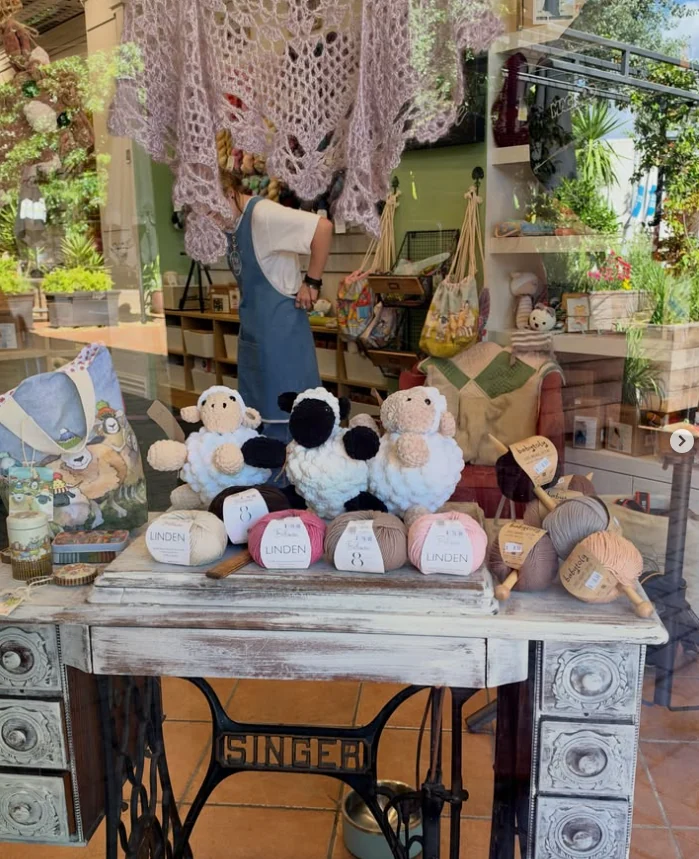

Green Square, Kingston
Come say hello.
Green SquareShop 30, 72 Jardine St
Kingston, ACT, Australia Get directions

Trading hours
- Tuesday–Thursday
- 9:30 am–5:00 pm
- Friday
- 9:30 am–8:00 pm
- Saturday
- 9:30 am–5:00 pm
- Sunday
- 10:00 am–4:00 pm

Green Square, Kingston
